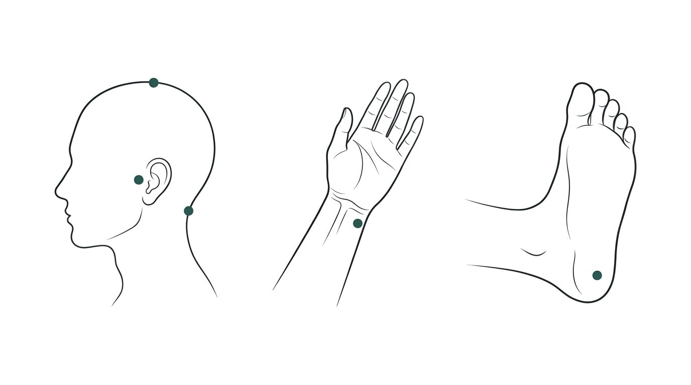

MRIやCT、聴力検査で「異常なし・様子見」と言われても、頭の中央や頭頂部で「キーン」「シャー」「ジー」と鳴り止まないのが頭鳴りのつらいところです。銀座そうぜん鍼灸院の臨床解説では、耳そのものの障害よりも、長期間のストレスや睡眠不足、首・肩の深層筋の強い緊張によって交感神経が過覚醒状態（脳が休めない状態）になり、聴覚野が過剰に反応し続けるメカニズムに注目しています。
| 比較項目 | 頭鳴り（ずなり） | 一般的な耳鳴り |
|---|---|---|
| 音を感じる場所 | 頭の中心・頭頂部・後頭部など頭の中全体 | 片耳または両耳の奥 |
| 検査での所見 | MRI・CT・聴力検査で「異常なし」が多い | 難聴・中耳炎・メニエール病などを伴う場合あり |
| 背景メカニズム | 脳の過覚醒（交感神経優位）・首深層筋の緊張・睡眠負債 | 内耳の有毛細胞障害・聴神経・中耳疾患など |
| 改善の経過目安 | 頭鳴り → 耳鳴りへ変化 → 音量の波を経て安定化 | 原因疾患の治療・血流改善とともに軽減 |
臨床上、頭鳴りはある日突然ゼロになるよりも、「頭全体で響いていた音が耳の周囲に降りてくる（耳鳴り化）」→「音質や音量が日によって変動する」→「気にならない時間が増えて安定する」という段階を踏みやすいのが特徴です。改善が見え始めたら、あえて施術間隔を空けながら脳の神経可塑性（新しい静かな状態の定着）を促す設計が重要になります（銀座そうぜん鍼灸院 公式解説）。
頭鳴りの鍼灸では、耳周囲の血流と三叉・迷走神経系を整えるツボ、後頭部の深層筋緊張を解くツボ、そして脳の興奮を鎮める遠隔ツボ（手首・踵）を組み合わせて使います。

| ツボ名（経穴） | 位置の目安 | 主な狙い・役割 | セルフケアのコツ |
|---|---|---|---|
| 聴宮（ちょうきゅう） | 耳珠（耳の穴の前）のすぐ前、口を開けるとくぼむ所 | 耳周囲の微小循環改善・聴覚関連の過緊張緩和 | 指の腹で5秒ほど優しく添える程度 |
| 角孫（かくそん） | 耳を前に折ったとき、耳の上端が当たる髪の生え際 | 側頭部の緊張緩和・自律神経バランス調整 | 強く揉まず、温めるか軽く押さえる |
| 頭竅陰（あたまきょういん） | 耳の後ろにある硬い骨（乳様突起）のやや上方のくぼみ | 側頭部〜聴覚野関連の興奮鎮静（rs-fMRI研究でも使用） | 刺激に敏感な場合は無理に押さない |
| 完骨（かんこつ） | 耳の後ろの骨（乳様突起）の下端、すぐ後ろのくぼみ | 胸鎖乳突筋・頭板状筋の緊張緩和、睡眠の質向上 | 蒸しタオルで温めると効果的 |
| 百会（ひゃくえ） | 左右の耳の上端を結んだ線と、鼻筋の延長線が交わる頭頂部 | 脳の過覚醒の鎮静・自律神経の切り替え | 頭を振って響く時は押さず遠隔ツボ優先 |
| 天柱（てんちゅう） | 後頭部の髪の生え際、首の太い筋（僧帽筋）のすぐ外側 | 首・後頭下筋群の深部緊張を緩める | 強い指圧や首回しは厳禁、温熱ケア推奨 |
| 神門（しんもん） | 手首の内側のしわ上、小指側のくぼみ | 交感神経の興奮・不安感・不眠の鎮静 | 就寝前にゆっくり呼吸しながら軽く押す |
| 失眠（しつみん） | 足裏のかかと（踵）の中央の少しくぼんだ所 | 頭部に昇った興奮を足元へ降ろす・入眠サポート | 頭や首の刺激で響く人に最優先でおすすめ |
頭鳴りは国際医学論文では「自覚的耳鳴り（Subjective Tinnitus）」や「体性感覚性耳鳴り（Somatic Tinnitus）」の枠組みで研究されています。近年、脳機能MRI（rs-fMRI）や二重盲検ランダム化比較試験（RCT）によって、鍼灸が聴覚野と感情・自律神経ネットワーク（島皮質・前帯状皮質など）の過剰な結合を鎮める可能性が報告されています。
2026年二重盲検RCTにおけるTHI（耳鳴り障害度スコア）改善量の比較
n=90（電気鍼群60名 vs シャム鍼群30名、7週間・計20回施術）。数値が大きいほど症状による生活支障度が大きく改善（PubMed PMID: 42191050）。
| 年・研究デザイン | 対象・規模 | 主な結果と臨床的意義 | 出典 |
|---|---|---|---|
| 2026年 二重盲検RCT＋rs-fMRI | 自覚的耳鳴り90名（電気鍼60 vs シャム30） | THIスコアが電気鍼群で-30.38（対照-21.76、P<0.001）、3か月後も-29.13と持続改善。脳機能結合の変化も確認。 | PubMed 42191050 |
| 2026年 メタ解析 | 不安を伴う耳鳴り12研究（計908名） | 耳鳴り重症度（THI・TEQ）に加え、不安指標（BAI・HAMA・SAS）も有意に改善。自律神経・情動面への効果を示唆。 | PubMed 42839938 |
| 2025年 頭鍼メタ解析 | 20件のRCT（計1,430名） | 頭鍼群で有効率RR=1.25（95% CI 1.16–1.35、p<0.00001）。ただし研究間のバイアス・異質性に留意が必要。 | PubMed 39828220 |
| 2024年 脳機能MRI研究 | 自覚的耳鳴り34名 vs 健常34名 | 聴宮・頭竅陰・百会などへの10回施術でTHI有意改善（p<0.01、有効率88.24%）。島皮質ネットワークの正常化を報告。 | PubMed 38585348 |
| 2020年 系統的レビュー | 8件のRCT（計504名） | VASは有意差なし（p=0.06）だが、生活支障度（THI MD -10.11、p<0.001）とTSI（-8.36）は改善。質の高い追加検証が課題。 | PubMed 32772848 |
| 2019年 症例報告（頸部筋） | 71歳女性（2年来の体性感覚性耳鳴り） | 頸部トリガーポイント鍼治療3回でNRS 7の耳鳴りが消失し、その後5年間再発なし。首筋緊張と音の強い連動を示す事例。 | PubMed 31369860 |
| 日本国内 臨床報告 | 耳鳴り患者103名（全日本鍼灸学会雑誌） | 著効・有効24.2%、やや有効26.2%、無効49.5%。難治性症状ゆえ個人差があり、過度な期待を避けた現実的評価が重要。 | J-STAGE 32巻4号 |
⚠ まず医療機関（耳鼻咽喉科・脳神経外科）の受診を最優先すべきサイン
突然の発症（突発性難聴の疑い）、心臓の拍動に一致する「ドクドク」という音（拍動性耳鳴り）、激しい頭痛・めまい・手足のしびれ・ろれつが回らない・視界の異常を伴う場合は、鍼灸より先に専門医での検査・標準治療を受けてください。
「検査で異常なしと言われても、脳の過覚醒と首の深層筋を丁寧にほどくことで、静かな日常へ近づく道はあります。」